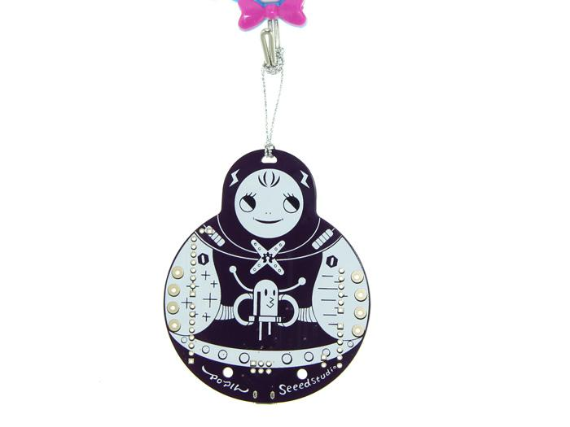
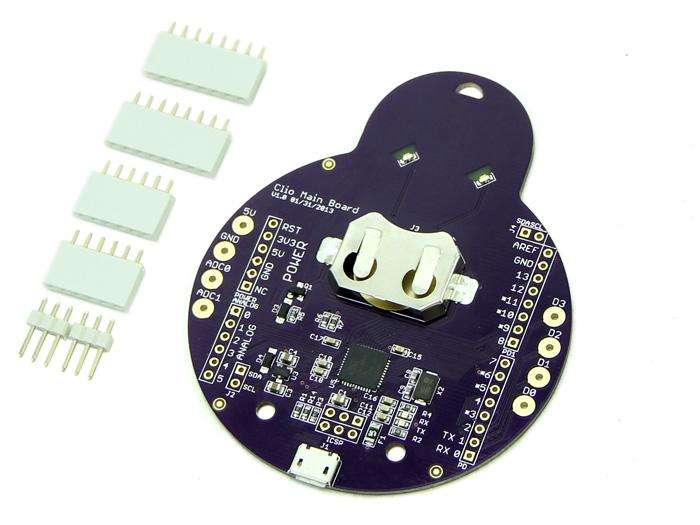
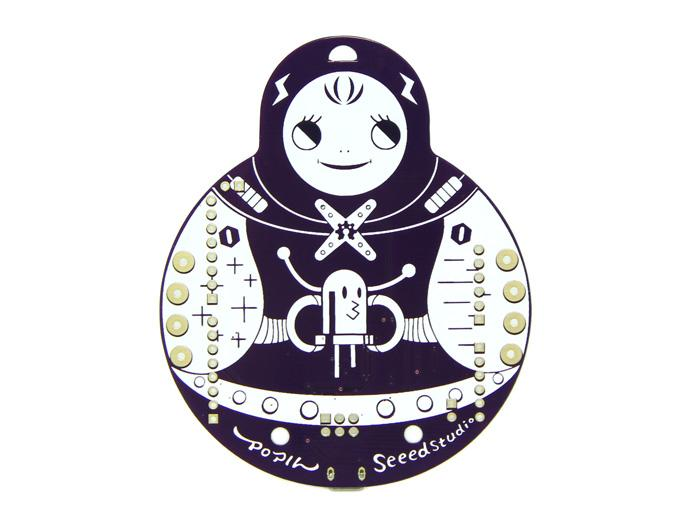
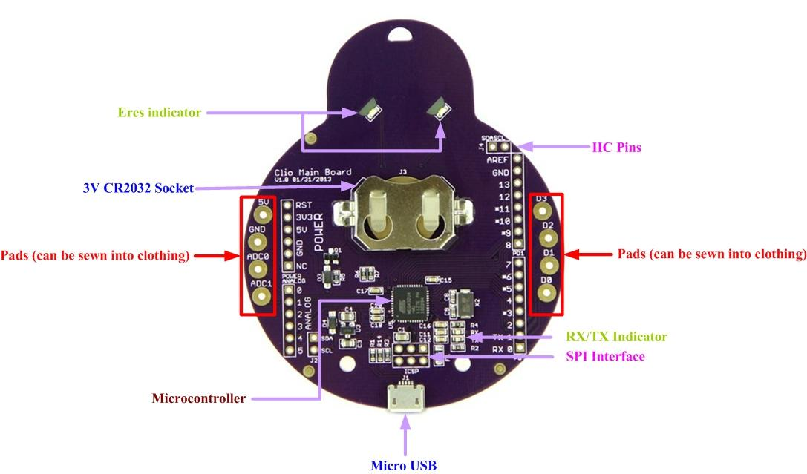
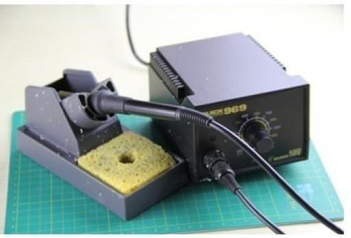
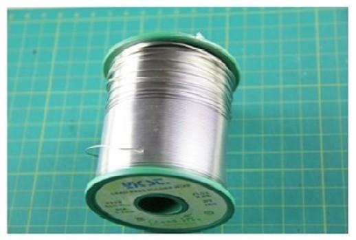
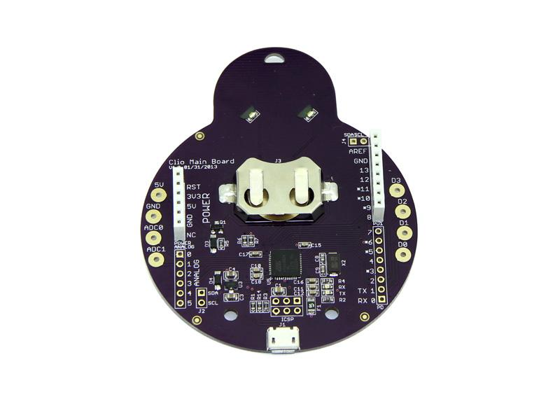
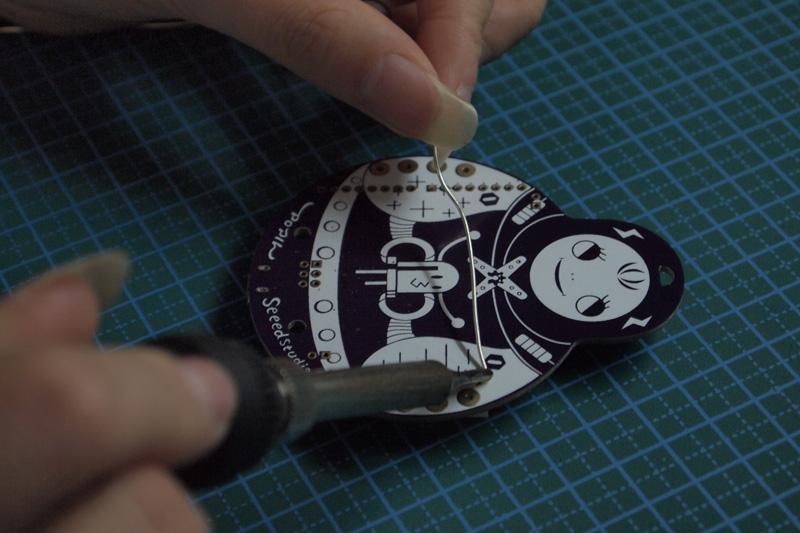
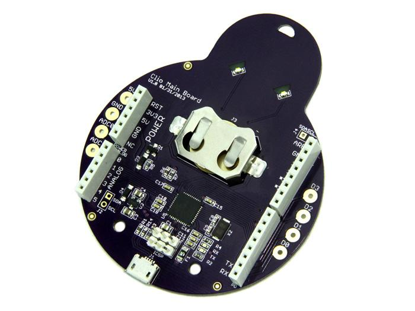

Clio is a complete Arduino compatible microcontroller. The former comparatively rigid PCBs are well transformed and take on a brand new vivid outlook with dynamic artistic and design elements into classic Arduino Leonardo version. If you desire for a unique Arduino , Clio would be a great choice.
It’s well known that the major reason of Arduino’s popularity is that it reduces the difficulty in using hardware. This makes it possible for innovators who have no hardware background to build projects easily. Seeed has been thinking about presenting Arduino to beginners in a more friendly way, so that PCB won’t be prohibitive to them. Hence, an idea that combines arts and Arduino arises spontaneously.
We invited the famous Chinese illustrator Popil to take part in the design of this product. The appearance of Clio resembles the Russian Dolls, with electronic elements added, On the premise of functionality and stability, we all adopted SMT components, and tried to reduce the number of components to the least, so that the silkscreen on the back of Clio can be well protected, making the board more concise. In order to make the doll more vivid, we use the stop mask at the eyes area on PCB. When the LEDs (pins 11 and 13) light up, the bright eyes can be seen even from the front side of the board.
The artistic elements and precise design of Clio are based on the same microcontroller as Arduino Leonardo, the ATmega32u4 chip with 3.3 voltages condition. ATmega32u4 owns 8-bit microprocessor, but the amazing new feature in-build USB Protocol achieves USB serial- communication successfully without ft232! So, you can enjoy a cheaper and more qualified Arduino.
Clio is a product for the calling of e-artistic fashions. We design a button lithium battery to afford your masterpiece with one more flexible choice, not only limited with USB charging. You simply putting in a lithium battery of 3.0V, Clio will work immediately.
Model: ARD04181P


Clio Main Board is a wearable e-textile technology. There were creatively designed to have large connecting pads to allow them to be sewn into clothing.
It was like a lovely doll which has two eyes and mouth.

Because of its chic exterior design, it is also a great choice to use it as a ornament.

If you want to use it like an Arduino, for example pluging shield modules onto Clio Main Board, then soldering is necessary. Assuming this is your first soldering project, let’s gather the tools and components to get started.
Only two basic tools are needed. If you hadn't have them on hand, then you will need to purchase them. They will be used time and again for your soldering projects. So if you have the available funds, choose tools that are well made.
1. Soldering Iron
You will need a basic soldering iron, a base to hold it, and a wet sponge. If possible, a soldering station, as seen in the picture below, is preferable because it includes an iron, a stand, a sponge and a power unit.

2.Solder
Soldering is to DIY electronics what glue is to paper. It uses an alloy to join two metal surfaces together.




| Items | parameter |
|---|---|
| Micro controller | ATmega32U4 |
| Operating Voltage | 3.0-5.0V |
| Digital I/O Pins | 20 (of which 7 provide PWM output) |
| Analog Input Pins | 12 |
| DC Current per I/O Pin | 40 mA |
| Flash Memory | 32 KB (of which 4 KB used by bootloader) |
| EEPROM | 1K |
| Clock Speed | 16 MHz |
Each of the 20 digital i/o pins on the Clio Main Board can be used as an input or output, using pinMode(), digitalWrite(), and digitalRead() functions. They operate at 5 volts. Each pin can provide or receive a maximum of 40 mA and has an internal pull-up resistor (disconnected by default) of 20-50 kOhms. In addition, some pins have specialized functions:
Serial: 0 (RX) and 1 (TX).
TWI: 2 (SDA) and 3 (SCL).
External Interrupts: 2 and 3.
PWM: 3, 5, 6, 9, 10, 11, and 13.
SPI: on the ICSP header.
LED: 13.
Analog Inputs: A0-A5, A6 - A11 (on digital pins 4, 6, 8, 9, 10, and 12).
There are a couple of other pins on the board:
AREF. Reference voltage for the analog inputs. Used with analogReference().
Reset. Bring this line LOW to reset the microcontroller. Typically used to add a reset button to shields which block the one on the board.
The Clio Main Board has a number of facilities for communicating with a computer, another Arduino, or other microcontrollers. The ATmega32U4 provides UART TTL (5V) serial communication, which is available on digital pins 0 (RX) and 1 (TX). The 32U4 also allows for serial (CDC) communication over USB and appears as a virtual com port to software on the computer. The chip also acts as a full speed USB 2.0 device, using standard USB COM drivers. The Arduino software includes a serial monitor which allows simple textual data to be sent to and from the Arduino board. The RX and TX LEDs on the board will flash when data is being transmitted via the USB connection to the computer (but not for serial communication on pins 0 and 1).
To connect the Clio Main Board to your computer, you'll need a Micro-B USB cable. This USB cable provides power and data to the board. The first time you plug a Clio Main Board into a PC, the "Does not recognize the USB device" will launch. Please right click and choose update driver.
Typically, you'll upload program to the Clio Main Board as you do with other Arduino boards: select "Seeeduino Clio" from the Tools > Board menu and the appropriate serial port from the Tools > Serial Port menu. Click the upload button in the Arduino IDE and your sketch will be automatically uploaded onto the board and then started.
Clio Main Board Eagle File
Clio Main Board Schematic.pdf
Clio Driver
If you have questions or other better design ideas, you can go to our forum or wish to discuss.
Copyright (c) 2008-2016 Seeed Development Limited (www.seeedstudio.com / www.seeed.cc)